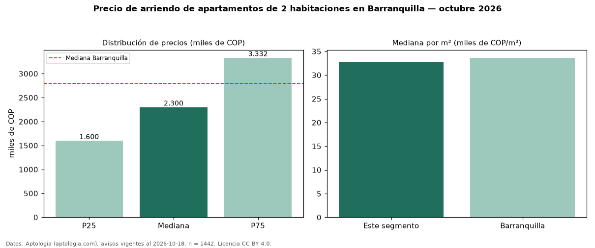

Precio de arriendo de apartamentos de 2 habitaciones en Barranquilla — octubre 2026
En Barranquilla, la mediana de canon mensual de apartamentos de 2 habitaciones es COP 2,30 millones, según 1.442 avisos vigentes. Frente a la mediana de todos los apartamentos en arriendo de Barranquilla (COP 2,80 millones), queda 18 % por debajo. Por metro cuadrado, la mediana es COP 32.759/m² al mes (n = 1405 avisos con área). Con el precio por m² de venta del mismo segmento (COP 4,75 millones/m²), la rentabilidad bruta implícita es 8,3 % anual (aproximación con medianas de ofertas distintas). El área mediana anunciada es 68 m². La administración mediana declarada es COP 380.000 al mes (n = 619), aparte del canon. La mitad central de los avisos va de COP 1,60 millones a COP 3,33 millones (razón 2,1), una dispersión alta. El estrato más frecuente es 5 (28 % de los avisos con estrato). Datos: Aptología (aptologia.com), CC BY 4.0 — https://www.aptologia.com/arriendo/barranquilla. Archivos: PDF, CSV con las cifras y gráfica PNG.

| Avisos únicos | 1442 |
|---|---|
| Percentil 25 | COP 1.600.000 |
| Mediana | COP 2.300.000 |
| Percentil 75 | COP 3.331.500 |
| Mediana por m² | COP 32.758 |
Fuente: avisos vigentes de portales inmobiliarios recopilados por Aptología, deduplicados (mínimo 30 avisos únicos por celda). Precios pedidos, no cerrados. Fecha: 2026-10-18.